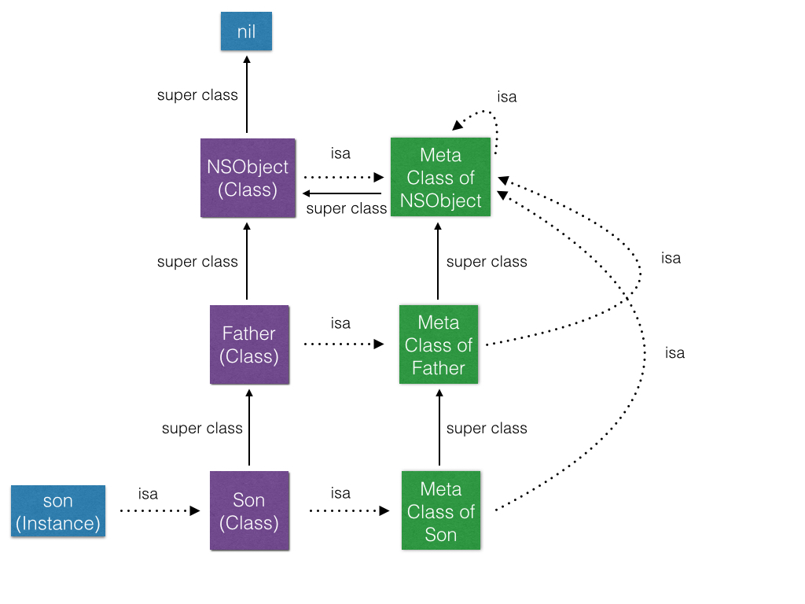
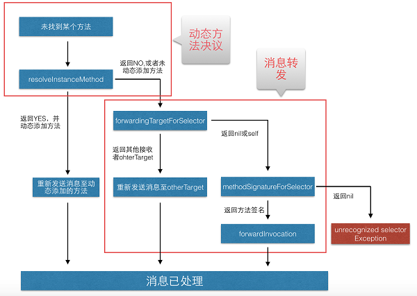

objc在函数调用采用的是发送消息的方式，使得调用方法在编译器不能确定，需要在运行时动态绑定，也就是所谓的runtime特性，可以这么说，objc的对象结构和其消息发送机制，决定了它的runtime特性。
一、Objective-C对象结构体
如下是一个具体实例对象的结构，其中有一个isa指针，指向其对应的Class在堆内存的地址，每个Class在内存中保存一个单例，该isa正是指向这个单例。
typedef struct objc_object {
Class isa;
} *id;
该类isa指针指向的Class对象（类对象）也定义在运行期程序库的头文件中：
typedef struct objc_class *Class;
struct objc_class {
Class isa;
Class super_class;
const char *name;
struct objc_ivar_list *ivars;
struct objc_method_list **methodLists;
struct objc_cache *cache;
struct objc_protocol_list *protocols;
} *id;
这个Class结构体就存储着类的“元数据”，存在isa指针说明这个也是一个OC对象（判断OC对象的方法就是isa指针），该指针指向该类的metaclass，表述类对象本身所具备的元数据。
插播Meta Class
可以把meta class理解为一个Class对象的Class。简单的说：
- 当我们发送一个消息给一个NSObject对象时，这条消息会在对象的类的方法列表里查找
- 当我们发送一个消息给一个类时，这条消息会在类的Meta Class的方法列表里查找
meta class的isa指针指向NSObject的meta class。
一个class的super_class指针指向它父类的class单例地址。
meta class的super_class指针指向原class父类的isa指针指向的meta class。
以此向上查找，一直找到NSObject(Class) 和 Meta Class of NSObject，NSObject的super class指向nil，meta class的super class指向NSObject，meta class的isa指针指向自己，实现了逻辑上的完善。具体关于isa指针的指向如下图所示：

再插播一条关于Class内省方法
isa指针的一个典型应用就是用于oc对象的内省方法isKindOf和isMemberOf
isKindOf就是比较目标类isa指针或者其父类
isa指针是否和当前类一致：
- (BOOL)isKindOf:aClass
{
Class cls;
for (cls = isa; cls; cls = cls->superclass)
if (cls == (Class)aClass)
return YES;
return NO;
}
isMemberOf更为粗暴，只比较当前类的isa指针是否一直即可：
- (BOOL)isMemberOf:aClass
{
return isa == (Class)aClass;
}
指向保存Class成员变量的ivars指针
objc_ivar_list结构体存储着objc_ivar数组列表，也就是各个成员变量，Class中保存着该结构的指针。
指向Class中方法列表指针的methodList指针
class中得methodList是一个指向指针的指针，所以category才能在已有的类中添加方法，才能通过swizzling动态交换方法，可以说这个methodList是oc中消息发送、动态绑定的关键。具体使用会在下文的“传递消息”介绍。
指向保存method查询历史的cache指针
这个数组列表主要用于优化消息动态查找使用的，因为方法调用实在运行期动态绑定的，相对编译器确定的语言，不可避免会降低调用效率，增加调用时间，该数组就是优化该使用的。具体使用会在下文的“传递消息”介绍。
指向保存Class实现的protocol的protocols指针
二、传递消息
核心就是 objc_msgSend方法：
void objc_msgSend(id self, SEL cmd, ...)
在我们调用一个函数
id returnValue = [someObj msgName:parameter]
编译器会将其转化为如下函数
id returnValue = objc_msgSend(someObj, @selector(msgName), parameter);
然后编译器会寻找someObj中isa指针指向的Class中methodList指向的那个数组，如果找到相符的代码，则实现，没有找到，就在它的继承体系中继续寻找（找super_class指向的Class的methodList），一直找到NSObject，如果还没有找到，就执行消息转发（下文描述）。
按照上面介绍的查找路径，每个方法在处理过程中会经过比较多的步骤，为优化查找顺序，系统会将已经匹配的IMP缓存到快速映射表里（上文的cache）。
class的methodList会把selector的名称映射到实现方法里，系统的方法会比较靠前，自定义的(category等)方法会在后面，查找过程为从后往前查找。methodList中得这些实现方法均以函数指针的形式表示，即IMP：
id (*IMP)(id, SEL, ...)
在OC中，我们可以动态替换方法(method swizzling)，就是通过methodList中得这种映射特性，将原来selector的名称映射的IMP和新的做交换，达到替换的目的。一般新建一个方法并替换系统方法的步骤为：
Method originalMethod = class_getInstanceMethod([UIView class], @selector(setFrame:));
Method swappedMethod = class_getInstanceMethod([UIView class], @selector(setNewFrame:));
method_exchangeImplementations(originalMethod, swappedMethod);
整理一下消息传递的流程
- 检查selector是否需要忽略。(ps: Mac开发中开启GC就会忽略retain,release方法。)
- 检查target是否为nil。如果为nil，直接cleanup，然后return。(这就是我们可以向nil发送消息的原因。)
- 然后在target的Class中根据Selector去找IMP
具体寻找IMP的过程:
- 先从当前class的cache方法列表（cache methodLists）里去找
- 找到了，跳到对应函数实现
- 没找到，就从class的方法列表（methodLists）里找
- 还找不到，就到super class的方法列表里找，直到找到基类(NSObject)为止
- 最后再找不到，就会进入动态方法解析和消息转发的机制。(第三部分介绍)
category同名方法的调用问题
我们是可以使用category定义和原Class中得相同方法，这些method会添加到Class的methodList数组列表底部，消息传递过程中，会从后查找，相当于覆写了系统方法。
如果两个category定义了同名的方法，这些方法也都会添加到methodList中，添加顺序为Build Phases中Compiles Sources中的文件顺序，后增加进去的会被调用，相当于覆写。
三、消息转发
消息转发发生在上面第二步一直到查找到NSObject得methodList依然没找到对应IMP的情况以后，在我们一般收到“unrecognized selector sent to instance 0x97”这种异常之前。这个异常是NSObject的“doesNotRecognizeSelector:”方法抛出的。
（1）先教科书下消息转发过程
动态方法解析(Dynamic Method Resolution或Lazy method resolution)
向当前类(Class)发送resolveInstanceMethod:(对于类方法则为resolveClassMethod:)消息，如果返回YES，则系统认为请求的方法已经加入到了，则会重新发送消息。快速转发路径(Fast forwarding path)
若果当前target实现了forwardingTargetForSelector:方法，则调用此方法。如果此方法返回除nil和self的其他对象，则向返回对象重新发送消息。慢速转发路径(Normal forwarding path)
首先runtime发送methodSignatureForSelector:消息查看Selector对应的方法签名，即参数与返回值的类型信息。如果有方法签名返回，runtime则根据方法签名创建描述该消息的NSInvocation，向当前对象发送forwardInvocation:消息，以创建的NSInvocation对象作为参数；若methodSignatureForSelector:无方法签名返回，则向当前对象发送doesNotRecognizeSelector:消息,程序抛出异常退出。
所有相关的方法包括：
方案一：
+ (BOOL)resolveInstanceMethod:(SEL)sel
+ (BOOL)resolveClassMethod:(SEL)sel
如方法可见，方案一的懒加载为静态方法，就是用于对类进行动态添加对应IMP，不算是真正意义上的转发消息，只是进行未找到selector的第一个解决办法，会直接修改类对象，在所有的该类的子类都会进行修改。一般针对@dynamic标记的变量进行动态添加get和set方法在这里进行处理。
方案二：
- (id)forwardingTargetForSelector:(SEL)aSelector
方案二多数是快速转发，将消息原封不动的转发给另一个对象，一般用于实现伪多继承。
方案三：
- (NSMethodSignature *)methodSignatureForSelector:(SEL)aSelector;
- (void)forwardInvocation:(NSInvocation *)anInvocation;
如果方案一和二都没走通，就会走一个完整的消息转发流程。此处会创建一个NSInvocation对象，里面包含target和selector以及所有的参数和返回值。
由于构建NSInvocation会先需要一个NSMethodSignature，这个签名是描述这个selector的返回值和参数的，完整的消息转发必须生成签名，如果签名为nil就会出现“unrecognized selector sent to instance”的错误。
在forwardInvocation中拿到NSInvocation对象后，可以随意修改其参数、selector或者对象。
完整的转发流程如下所示:

（2）NSProxy
消息转发中得快速转发一个比较大得你应用场景就是多代理和多继承。
Objective-C中有两个根类，一个是NSObject，另一个就是这个NSProxy。
参考：
http://chun.tips/blog/2014/11/06/bao-gen-wen-di-objective[nil]c-runtime(3)[nil]-xiao-xi-he-category/